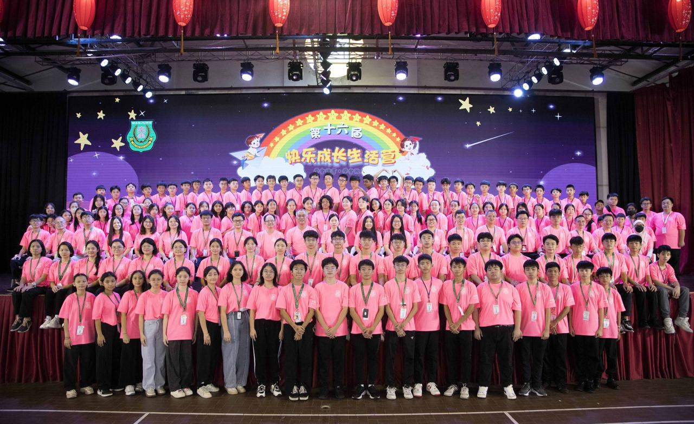
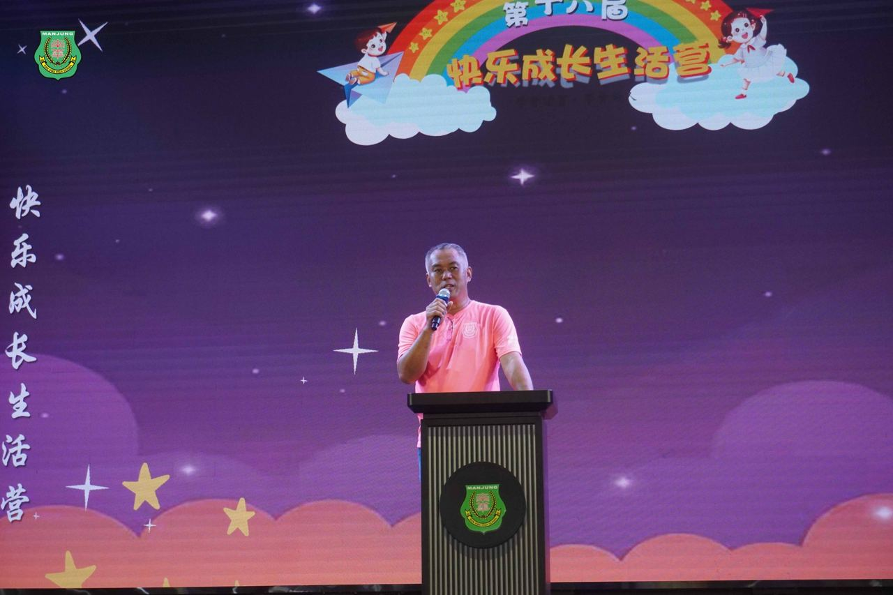
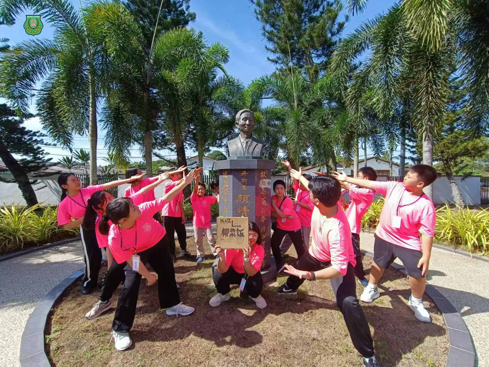
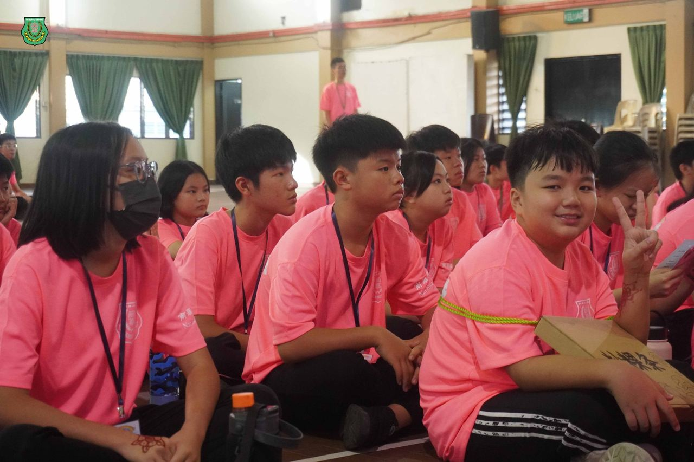
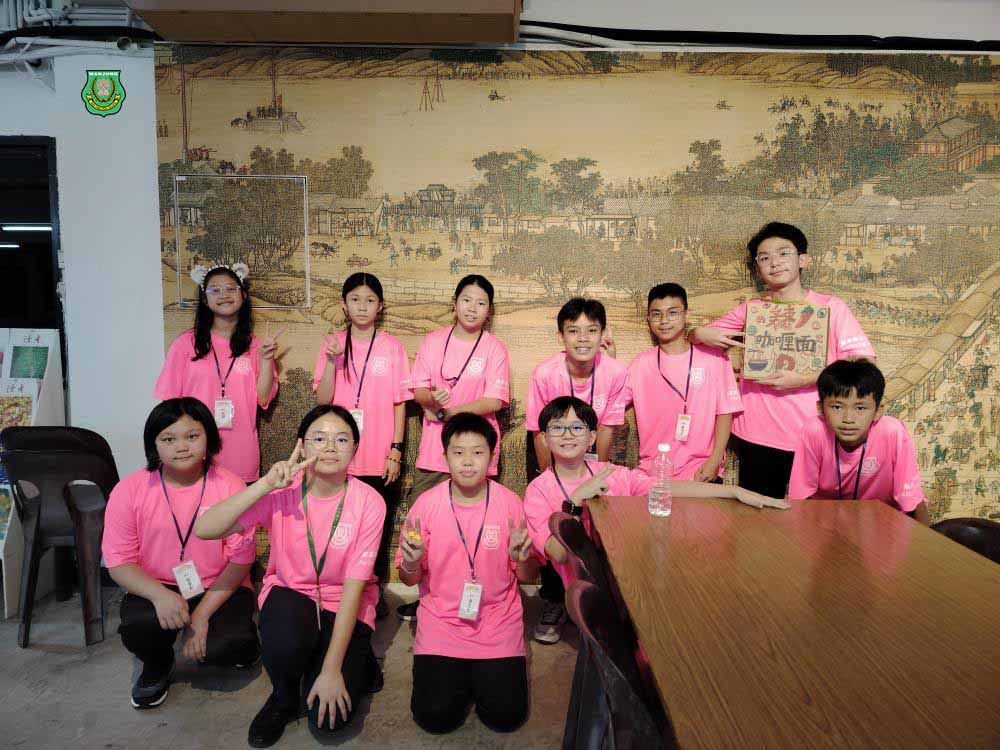
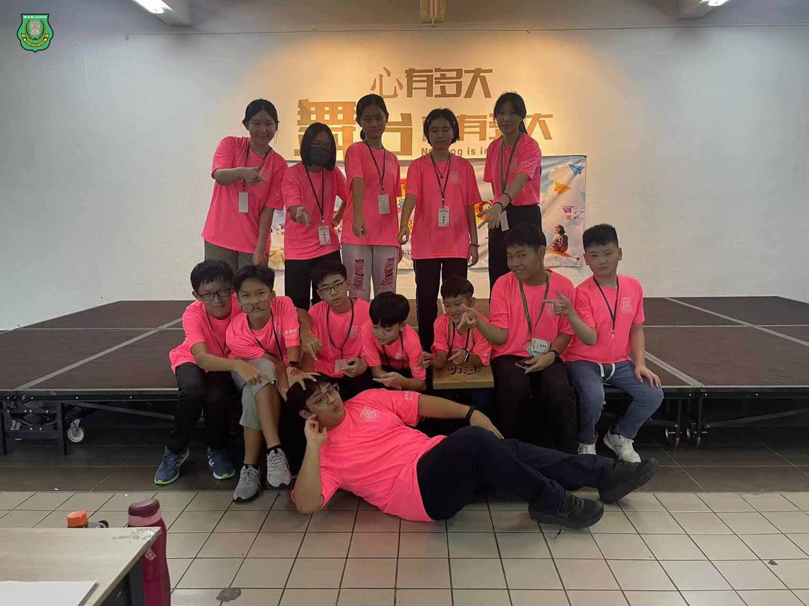
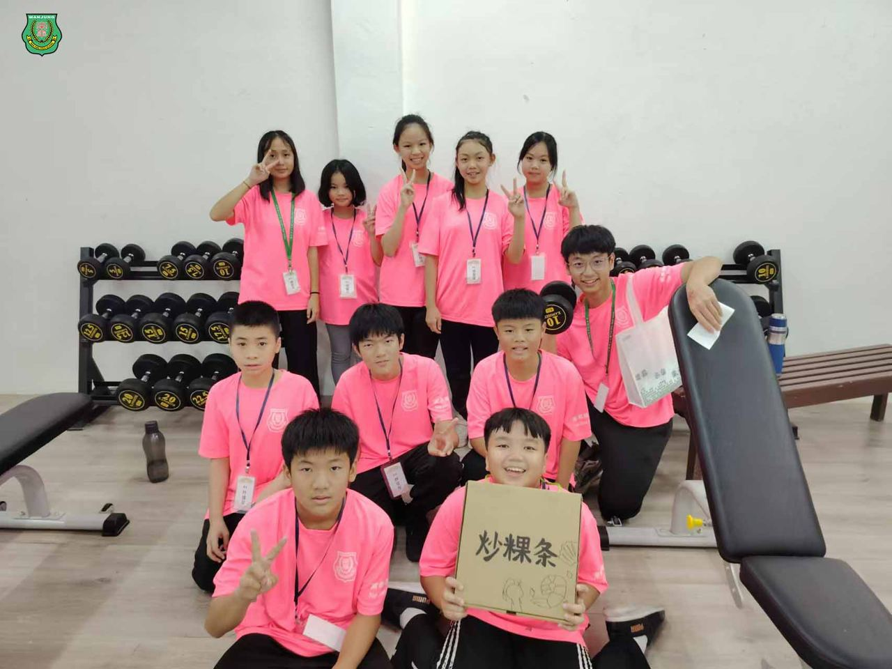
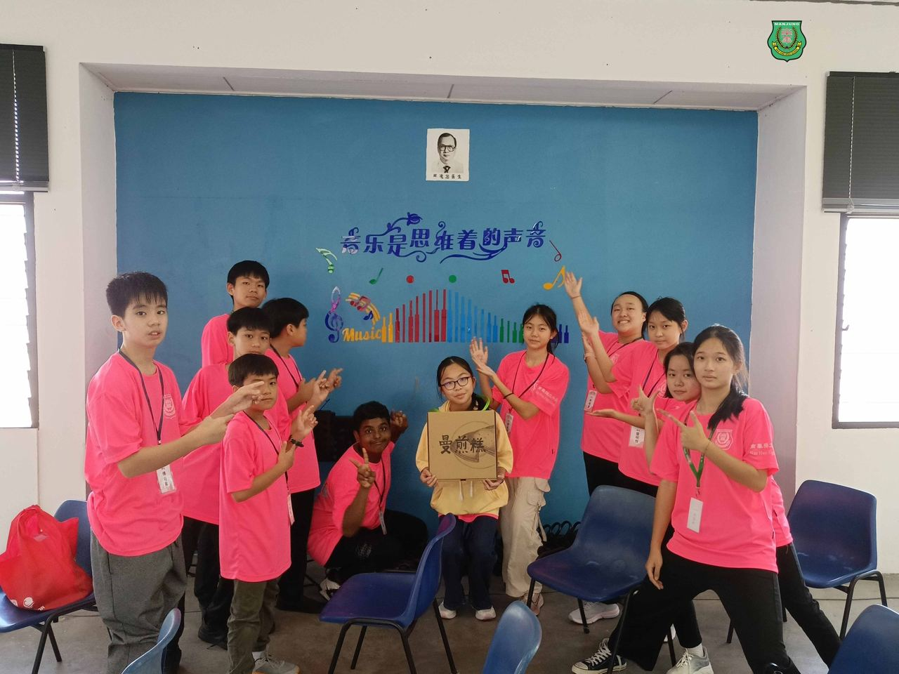

南华独中第16届快乐成长生活营
南华独中第16届快乐成长生活营
吸引来自霹雳与金马仑76位营员参加
由曼绒南华独中师生举办“第十六届小六快乐成长生活营”成功共吸引来自霹雳州与金马仑共76位营员报名参加。此营会宗旨为建立营员良好人际关系品德，培养正确价值观，以助健康快乐成长与扩大营员生活圈子，培养友爱及团结的精神。
生活营中准备了鼓励学生积极正面、自主探索、动手制作与的成长工作坊、趣味体验课、弟子规诵读、激励讲座、团康游戏及节目，例如：印度手绘、红龟糕陶泥彩绘、非物质文化遗产手工编织扇子艺术、趣味科学实验等。
快乐成长生活营顾问暨南华独中董事总务何添胜先生在开幕仪式上致辞表示，南华独中坚持每一年风雨无阻地举办小六快乐成长生活营，希望营员们能够在这三天两夜中尽情享受、快乐学习、用心感受与体会，因为所有成长的元素就在生活之中，只有开启学习的心扉，才能学习到生活中深刻的智慧。
快乐生活营主席暨南华独中校长陈丽冰博士致辞强调沉浸在快乐中学习、学习中快乐的重要性，并且以“快乐学习、学习快乐就像是给心灵种下快乐的种子，在未来成长的道路中，会随着感受与体验而萌发成长成参天大树”勉励营员，并表示只要是参加本校活动的营员未来都是南华独中的“小校友”，欢迎日后多回来校园探望。







